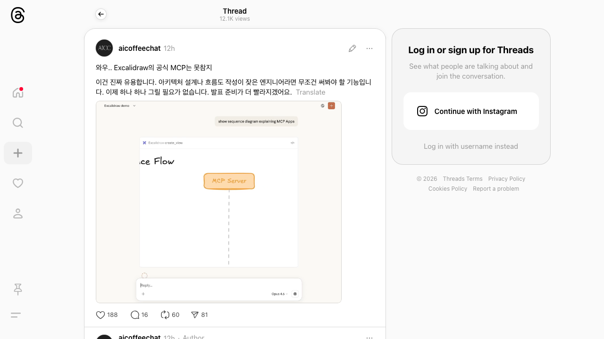

Excalidraw 공식 MCP 서버 출시
Public GitHub Pages export · full wiki body rendered · raw files excluded
Excalidraw 공식 MCP 서버 출시
Source candidate from News-Links/2026-02-12 Excalidraw MCP/README.md
Source Content
Excalidraw 공식 MCP 서버 출시
📌 요약
Excalidraw가 공식 MCP(Model Context Protocol) 서버를 출시했다. AI 에이전트가 자연어 프롬프트만으로 손으로 그린 스타일의 다이어그램을 생성할 수 있다.
원문 (Threads @aicoffeechat)
와우.. Excalidraw의 공식 MCP는 못참지 이건 진짜 유용합니다. 아키텍처 설계나 흐름도 작성이 잦은 엔지니어라면 무조건 써봐야 할 기능입니다. 이제 하나 하나 그릴 필요가 없습니다. 발표 준비가 더 빨라지겠어요.

🔍 Excalidraw MCP 상세
- GitHub: excalidraw/excalidraw-mcp
- 기능: MCP 서버로 hand-drawn 스타일 Excalidraw 다이어그램을 스트리밍 생성
- 뷰포트 카메라 컨트롤 + 인터랙티브 풀스크린 편집 지원
설치 방법
Remote (권장):
- URL:
https://excalidraw-mcp-app.vercel.app/mcp` - Claude, ChatGPT, VS Code, Goose 등 MCP Apps 지원 클라이언트에서 사용 가능
Local:
.mcpb파일 다운로드 후 Claude Desktop에 설치- 또는 소스 빌드 (
git clone→npm install && npm run build)
사용 예시 프롬프트
- "Draw a cute cat using excalidraw"
- "Draw an architecture diagram showing a user connecting to an API server which talks to a database"
MCP Apps란?
텍스트 응답의 한계를 넘어, MCP 서버가 인터랙티브 HTML 인터페이스(데이터 시각화, 폼, 대시보드)를 채팅 내에서 직접 렌더링하는 공식 MCP 확장 규격.
💡 인사이트
- 아키텍처 설계, 흐름도 작성이 잦은 엔지니어에게 생산성 대폭 향상
- 발표 자료 준비 시간 단축
- MCP Apps 생태계 확장의 좋은 사례
- BaseAgent 프로젝트에서도 MCP 연동 시 활용 가능성 있음
Captured by Jarvis on 2026-02-12
Source Trace
News-Links/2026-02-12 Excalidraw MCP/README.md